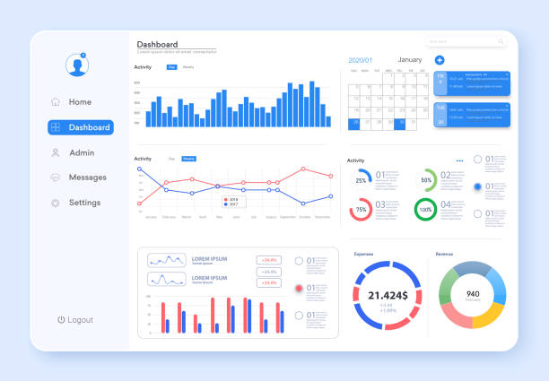

Mes Travaux

Développement Web
Cliquez ici pour découvrir quelques de mes travaux réalisés cette année en développement Web ! Il s'agit bien évidemment en général de sites Web.

Création tableau de bord
Cliquez ici pour découvrir mes créations réalisées en design numérique cette année ! Il s'agit ici de créations d'illustrations, de montage photo, de création de logo...
transfet basse de donné
Cliquez ici pour découvrir mes autres travaux ! Cette fois si il ne s'agit pas d'un site internet mais cela une relation car c'est de la base de donné.

cybercécurité
Cliquez ici pour découvrir mes créations personnelles ! Cette fois si il ne s'agit pas d'un site internet mais bien de la cybercécurité !